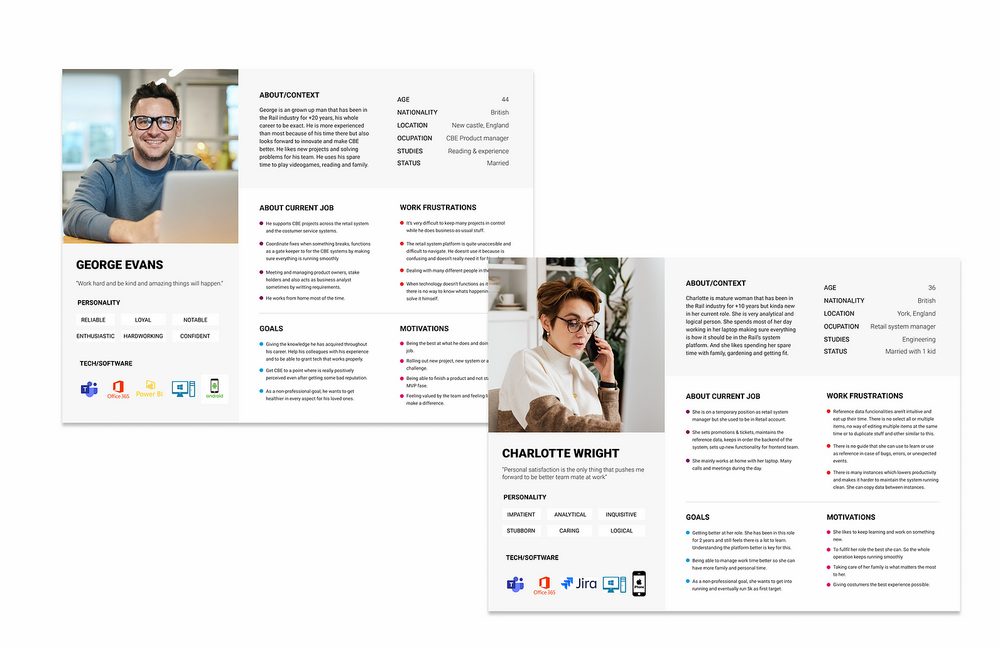

CBE's Rail Dashboard app redesign
Project Details
- Category : Web app design
- For : Vix Technologies as employee at Avantica
- Timeline : Jan 2021 - Mar 2021
- My role : UX/UI Design Specialist
- Software : Figma, Miro, Teams
- Design methodologies : User persona, Card sorting, Heuristic test, Task prioritization , Wireframing, Prototyping, Usability testing, Atomic design
- The work plan was done through virtual interviews due to the contingency of COVID 19 and the team's location.
Description:
The project was about the redesign of CBE's railway administration platform, in which we worked from research to the design of high-fidelity screens and prototypes. The biggest problem with the software was its difficulty of use, reprocessed, and outdated interface.
Before redesign
UX process:
The process implemented in this project was :
- Contextualization, problem definition, and possible approaches.
- User research through interviews to create an accurate Persona design.
- Workshops with our users to identify the current Customer Journey and improve pain points.
- Prioritization of tasks and backlog mapping of the platform.
- Wireframing, high fidelity design, and prototyping.

Personas:
Interviews with six users of the platform to understand their profile, jobs, the way they use the platform, and other insights useful in order to create an accurate solution for them.
Guiding Questions:
- What is your job role? How do you spend a typical weekday? What do you do when you first get into the office? What do you do next?
- How was your journey to get this job? Were you working before for a similar company? Which one?
The work plan was done through virtual interviews due to the contingency of COVID 19 and the team's location.

Workshops & costumer Journey:
The customer journey process for Vix had a combination of different design research methodologies such as Brainstorming, Customer journey map, Card sorting, and heuristic test. The goal was to acquire a lot of feedback through virtual workshops and prioritizing the most recurrent pains expressed by users.
Wireframes:
After defining the most critical features within the platform, reviewing possible solutions, and prioritizing the client's needs. We made the platform's new structure based on the user's needs and their profiles to build the best solutions that will allow them to optimize their work process.

High fidelity design & prototyping:
Once the wireframes were finished and validated with the users and the client, we designed a UI Kit and a Style guideline that acts as the source of truth for devs and designers that will build the platform. They can find atomic design components, behaviors, states, and many more details.